'One-child' policy violators to be put on shame list
2007-03-02 China Daily
The rich and famous who have ignored the country's family planning policy by having more than one child will have to pay a heavy price, according to a senior official with the National Population and Family Planning Commission. In addition to hefty fines, they will have their names recorded in an official "bad credit" file and be disqualified for any awards and honours from society, said Yu Xuejun, director of the commission's Department of Policies and Laws. Source.
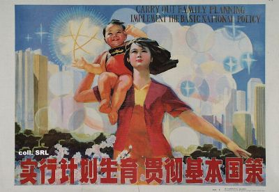
In fact, the one-child policy has been a devastating failure that was based on a shaky assumption: namely, that the world is overpopulated, and so reproduction must be controlled. Additionally, “one-child” is an example of a social-engineering program that was launched to correct the unintended consequences of an earlier social-engineering program that encouraged large families. Indeed, China has recently launched yet another program called The Care for Girls program. This is a social program introduced to remedy a social program that was introduced to remedy a social program.
In a 1949 speech titled “The Bankruptcy of the Idealist Concept of History,” the then-leader of Communist China, Mao Zedong, declared, “It is a very good thing that China has a big population. Even if China’s population multiplies many times, she is fully capable of finding a solution; the solution is production. The absurd argument of bourgeois Western economists like Malthus that increases in food cannot keep up with increases in population was not only refuted long ago by Marxists, but has also been completely exploded by the realities in the Soviet Union and the liberated areas of China after the revolution.” To Mao a large population was “a very good thing” for several reasons; for one, it represented more labor power. The main reason, however, was Mao’s fear of an armed conflict with “the West”— specifically with the United States.
|
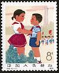 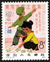 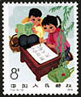 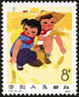 |
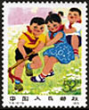 |
|||
|
China, 1 Dec. 1975, Children of new China. T14. Scott 1245 -1249. Several children are shown together. |
||||
During the 1950s and ’60s, Chinese women were encouraged to reproduce and given awards for doing so. Advocates of population control were sometimes imprisoned although family planning became more acceptable as the ’60s evolved. Thus China experienced a massive increase in population.
In 1979, three years after Mao’s death, the new leader of China, Deng Xiaoping, announced the “one-child policy.” Vice Premier Chen Muhua described the policy as one “of encouragement and punishment for maternity, with encouragement as the main feature. . . . Parents having one child will be encouraged, and strict measures will be enforced to control the birth of two or more babies. Everything should be done to insure that the natural population growth rate in China falls to zero by 2000.”
|
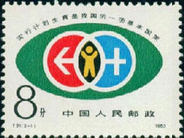 |
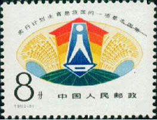 |
|
China, 19 Sept. 1983. Family planning. Sc. 1883 - 1884. One couple brings up one child. |
|
The policy was enforced nationwide in 1981 and has remained the law of the land since, although significant changes have occurred. What hasn’t changed, however, is that China regulates and controls the procreation of its citizens more strictly and universally than any nation except, perhaps, communist Romania under Ceausescu. In short, each “only child” might become solely responsible for two aging parents and as many as four grandparents; known as the “4-2-1” problem, it is a responsibility that many or most of the “one-child” generation may be unable to meet.
|
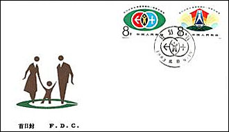 |
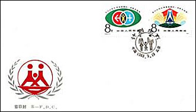 |
| China, 19 Sept. 1983. Family planning. Sc. 1883 - 1884. One couple brings up one child. FDC's | |
The most publicized negative consequence, however, is the severe skewing of the population toward males. The Chinese are known for having a high preference for sons. This preference has resulted in a high rate of female infanticide (and, later, sex-selective abortions) to remove first-born daughters and, so, to clear the legal path to have a son. According to China’s official news agency, 119 boys are now born for every 100 girls; the ratio in natural circumstances is 103 to 107 boys for every 100 girls. By 2020 China may contain 30 to 40 million restless bachelors—known in China as “bare branches”—and worried observers predict everything from a steep increase in rape to wars aimed at securing brides.
By February 29 (2008 - VM) the New York Times, International Herald Tribune, and several UK papers quoted Zhao and speculated that the reason behind a loosening of policy was China’s urgent need for more young people who could be taxed in the future and otherwise care for China’s huge aging population...There are several reasons why the news story spread so quickly. The one-child policy has stirred worldwide controversy both for its violation of civil rights (including the forced abortion of “extra” children) and for its unintended consequences (for example, a preference for sons has created a sex ratio of almost 120 boys to every 100 girls born).
|
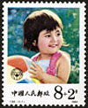 |
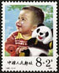 |
| China, 1984. Children. Semipostal. T92. Scott b1-b2. Only children. | |
..., recent developments in agriculture, like the previous Green Revolution in the twentieth century, may dramatically increase food resources. For example, recently developed biotech crops both increase productivity and reduce the need for insecticides. Thus the one-child policy has not only been disastrous both in terms of human rights and practical consequences for generations to come; it is far from clear that its rationale is even valid.
|
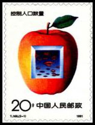 |
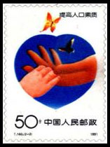 |
The above two stamps, issued on April 20th, 1991, T160, Scott 2320 - 2321, Stanley Gibbons 3725 - 3726, are surely among the most interesting of all those presented on this page. It is not easy for us to understand the symbolism of the first one (officially named: Control Population Increase), that displays something like kisses without consequences (in an apple without seeds, and with only one leaf). The second one is called: Improve Population Quality, a name that points towards eugenics, being illustrated by a normal and a deformed hand. The descriptions found in Scott and SG, as Child & Adult Hand, are more than questionable in this unambiguous context...
Source: China's One Child Disaster, by Wendy McElroy, June 2008.
Poster courtesy of Stefan Landsberger's "Chinese Propaganda Posters" site.It changes but too slowly
In 2016, when China scrapped its long-reigning one-child policy, the zodiac stamps featured a monkey family with one adult monkey and two baby monkeys. The design was unveiled in late 2015 before the one-child policy was officially abandoned on January 1, 2016.
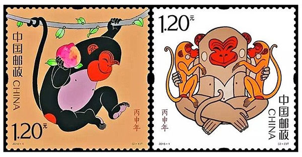
At present, each couple in China is allowed to have a maximum of two children. The design of China's new zodiac stamps for the year of the pig has sparked speculation that Beijing might end its two-child policy next year. Source.
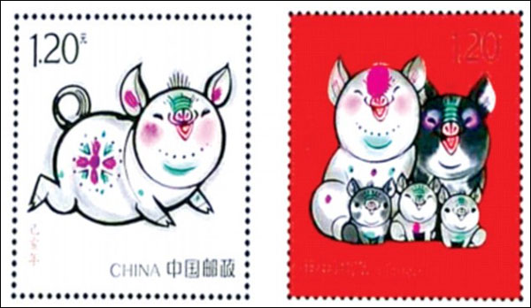
Update. Families in China can now have as many children as they like without facing fines or other consequences, the Chinese government annonced mid 2021. Finally! Meanwhile India's population surpassed that of China's ...
Recommendation. "As illuminating as it is accessible, One Child Nation probes a painful chapter in Chinese history with piercing clarity."
|
|
Created:
03/06/09.
Revised:
Jan. 10, 2024
.
|